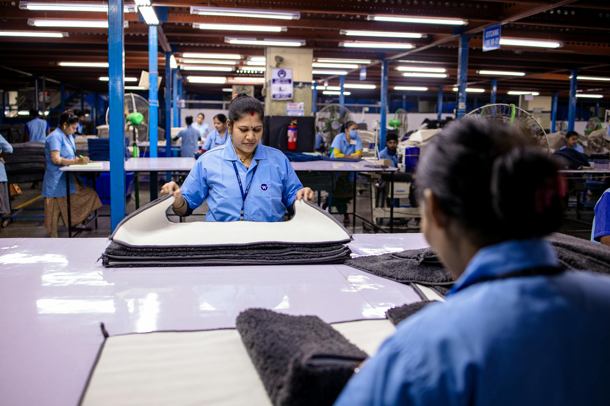
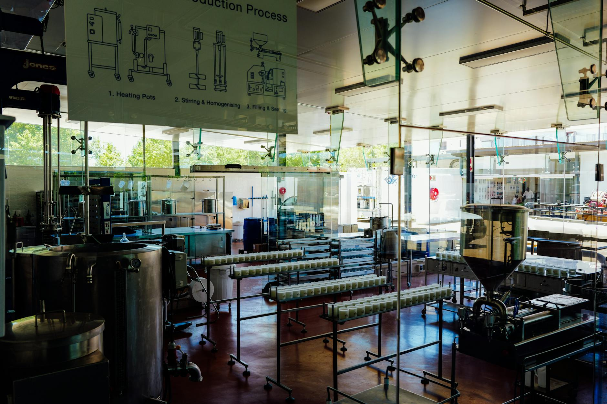

Hướng dẫn Mới nhất
Các bài viết chuyên sâu dành cho người nước ngoài làm việc tại Nhật Bản
Cách báo lỗi hoặc báo bất thường trên chuyền sản xuất
Khi thấy lỗi hoặc điều gì bất thường trên chuyền sản xuất, hãy báo ngay. Báo sớm và rõ ràng sẽ giúp tránh phế phẩm, dừng chuyền và tai nạn.
Đọc bài viết →
Phải làm gì nếu bạn sẽ đến muộn ở nhà máy Nhật Bản
Nếu bạn sắp đến muộn ca làm ở nhà máy Nhật Bản, cách báo tin rất quan trọng. Hãy liên hệ càng sớm càng tốt, nói rõ lý do và thời gian dự kiến đến nơi. Bài viết này giải thích nên báo cho ai, nên nói gì và làm sao để tránh lặp lại vấn đề.
Đọc bài viết →Những Sai Lầm Phổ Biến Của Lao Động Nước Ngoài Mới Trong Nhà Máy Nhật Bản
Khi mới vào làm ở nhà máy Nhật Bản, bạn phải học cùng lúc công việc, lịch làm, quy tắc an toàn và cách ứng xử. Sai sót lúc đầu là chuyện rất dễ xảy ra, nhưng phần lớn đều có thể tránh nếu bạn biết điều cần để ý.
Đọc bài viết →Ứng phó Động đất Cơ bản cho Công nhân Nhà máy ở Nhật Bản
Động đất có thể xảy ra bất ngờ ở Nhật Bản, nên công nhân nhà máy cần biết rõ phải làm gì. Ứng phó đúng giúp giảm chấn thương, bớt hoảng loạn và sơ tán an toàn hơn.
Đọc bài viết →Danh Sách Việc Cần Chuẩn Bị Cho Ngày Đầu Tiên Khi Làm Ở Một Nhà Máy Nhật Bản
Ngày đầu tiên ở một nhà máy Nhật Bản có thể khiến bạn khá choáng ngợp, nhất là khi bạn mới đi làm hoặc mới đến Nhật. Một checklist đơn giản sẽ giúp bạn chuẩn bị tốt, tạo ấn tượng đầu tiên tích cực và tránh những sai sót ảnh hưởng đến an toàn hoặc việc chấm công.
Đọc bài viết →Cần làm gì khi thẻ chấm công ở xưởng tại Nhật bị sai
Nếu thẻ chấm công của bạn bị sai, đừng bỏ qua. Một lỗi nhỏ cũng có thể ảnh hưởng đến lương, tăng ca và hồ sơ chuyên cần. Điều quan trọng là kiểm tra sớm, báo rõ ràng và giữ bằng chứng về giờ làm thực tế.
Đọc bài viết →Cách báo nghỉ làm ở một nhà máy Nhật Bản
Khi bạn không thể đi làm ở một nhà máy Nhật Bản, việc báo nghỉ sớm và rõ ràng là rất quan trọng. Điều này giúp đội ngũ sắp xếp ca làm và cho thấy bạn làm việc có trách nhiệm.
Đọc bài viết →
Quy Dinh Diem Danh trong Nha May Nhat Ban
Diem danh la mot trong nhung quy dinh quan trong nhat trong nha may Nhat Ban. Bai viet nay giai thich cach xu ly cham cong, di tre, va nghi phep.
Đọc bài viết →
Họp Sáng (Chōrei) trong Nhà Máy Nhật: Những Điều Bạn Cần Biết Mỗi Ngày
Chōrei là gì, điều gì xảy ra trong đó, kéo dài bao lâu và cách tham gia đúng cách với tư cách là công nhân nước ngoài — mỗi ca làm việc.
Đọc bài viết →
Bảo Hiểm Xã Hội (Shakai Hoken) cho Công Nhân Nhà Máy Nhật: Hướng Dẫn Đơn Giản
Shakai hoken bao gồm gì, bao nhiêu bị khấu trừ, cách sử dụng thẻ bảo hiểm y tế và cách lấy lại tiền lương hưu khi rời Nhật Bản.
Đọc bài viết →
Quy Tắc Giờ Nghỉ Trưa và Giờ Nghỉ tại Nhà Máy Nhật Bản
Tất cả những gì bạn cần biết về hiruyasumi, nơi ăn uống, nghi thức phòng nghỉ và các quy tắc hay khiến người lao động nước ngoài bất ngờ.
Đọc bài viết →
Sống Trong Ký Túc Xá Nhà Máy Nhật Bản (寮): Nội Quy, Chi Phí và Những Điều Cần Biết
Tất cả những điều bạn cần biết về ký túc xá công ty — chi phí, nội quy, mâu thuẫn phòng ở và cách bảo vệ tiền đặt cọc.
Đọc bài viết →
5S Trong Nhà Máy Nhật Bản: Là Gì và Cách Thực Hiện Với Tư Cách Người Lao Động Nước Ngoài
Seiri, seiton, seisō, seiketsu, shitsuke — tìm hiểu 5S có nghĩa gì, tại sao được coi trọng và nhiệm vụ hàng ngày của bạn trên sàn nhà máy.
Đọc bài viết →
Thực Tập Sinh Kỹ Năng vs Lao Động Kỹ Năng Đặc Định Nhật Bản: Khác Nhau Như Thế Nào?
So sánh rõ ràng TITP và SSW — quyền lợi, thời hạn, thay đổi chủ lao động và lộ trình nào tốt hơn cho công nhân nhà máy.
Đọc bài viết →
Ngày Lễ Quốc Gia Nhật Bản và Ảnh Hưởng Đến Lịch Làm Việc Nhà Máy Của Bạn
16 ngày lễ quốc gia, Golden Week, Obon, nghỉ Tết — và ý nghĩa của chúng đối với lương, kế hoạch du lịch và giấy tờ của bạn.
Đọc bài viết →
Trợ Cấp Đi Lại Tại Nhà Máy Nhật Bản: Bạn Được Nhận Gì và Cách Nó Hoạt Động
Giới hạn miễn thuế, hoàn trả vé đi lại, quy định xe buýt công ty và việc phải làm khi chuyển địa chỉ.
Đọc bài viết →
Khám Sức Khỏe Hàng Năm Tại Nhà Máy Nhật Bản: Những Điều Người Lao Động Nước Ngoài Cần Biết
定期健康診断 kiểm tra những gì, có bắt buộc không, cách đọc kết quả và quyền riêng tư y tế của bạn.
Đọc bài viết →
Điều Gì Xảy Ra Nếu Bạn Nghỉ Việc Ở Nhà Máy Nhật Bản Trước Khi Hết Hợp Đồng?
Quyền pháp lý nghỉ việc, điều gì xảy ra với nhà ở và visa, quyền lợi lương cuối và cách nghỉ đúng cách bằng văn bản.
Đọc bài viết →
Số và Đơn Vị Tiếng Nhật Dành Cho Công Nhân Nhà Máy: Bảng Tham Khảo Thực Tế
Số cơ bản, đơn vị đếm (個/本/枚/台), đơn vị đo lường trong tiếng Nhật, nhiệt độ, thời gian và từ vựng tỷ lệ lỗi cho sàn nhà máy.
Đọc bài viết →
Nghỉ Phép Có Lương (有給休暇) Tại Nhà Máy Nhật Bản: Hướng Dẫn Dành Cho Người Lao Động Nước Ngoài
Số ngày được cấp, quy tắc bắt buộc 5 ngày, cách xin nghỉ và điều gì xảy ra với ngày nghỉ chưa dùng khi thôi việc.
Đọc bài viết →
Tăng Lương và Thưởng Tại Nhà Máy Nhật Bản: Những Điều Người Lao Động Nước Ngoài Cần Biết
Cách đánh giá jinji kōka hoạt động, lịch thưởng hai lần mỗi năm và sự khác biệt của lao động phái cử.
Đọc bài viết →
Làm Thêm Giờ ở Nhà Máy Nhật Bản: Quy Tắc, Lương và Quyền Lợi Của Bạn
Tìm hiểu giới hạn pháp lý về làm thêm giờ, cách tính mức lương, ý nghĩa của thỏa thuận 36-kyōtei và cách nhận biết làm thêm giờ bất hợp pháp không trả lương.
Đọc bài viết →
Phải Làm Gì Khi Bị Tai Nạn Lao Động Ở Nhà Máy Nhật Bản (Hướng Dẫn Rōsai)
Bị thương tại nơi làm việc? Tìm hiểu cách báo cáo tai nạn, yêu cầu bồi thường rōsai và bảo vệ quyền lợi của bạn với tư cách người lao động nước ngoài tại Nhật Bản.
Đọc bài viết →
Làm Ca Đêm tại Nhà Máy Nhật Bản: Những Điều Người Lao Động Nước Ngoài Cần Biết
Tất cả những gì bạn cần để sống sót và thành công khi làm ca đêm — từ phụ cấp ca đêm đến mẹo giữ sức khỏe và nhịp sinh học.
Đọc bài viết →
Haken và Tuyển Dụng Trực Tiếp: Điều Người Lao Động Nước Ngoài Tại Nhà Máy Cần Biết
Bối rối về loại hợp đồng của bạn? Tìm hiểu sự khác biệt chính giữa haken (phái cử) và tuyển dụng trực tiếp tại các nhà máy Nhật Bản.
Đọc bài viết →
Những Câu Tiếng Nhật Cần Thiết cho Công Nhân Nhà Máy: 50 Từ Bạn Phải Biết
Những từ và câu tiếng Nhật quan trọng nhất cho sàn nhà máy — lời chào, thuật ngữ an toàn, hướng dẫn và các cách diễn đạt khẩn cấp.
Đọc bài viết →Văn hóa Nhà máy Nhật Bản: Những điều Mỗi Công nhân Nước ngoài Phải Biết
Khám phá sâu về các quy tắc bất thành văn, tư duy tập thể và phong tục hàng ngày định hình cuộc sống bên trong nhà máy Nhật Bản.
Bài viết — sắp ra mắtCác Quy tắc Bất thành văn của Nhà máy Nhật Bản
Những kỳ vọng không nói ra mà mọi công nhân nước ngoài đều học theo cách khó khăn.
Bài viết — sắp ra mắtCách Đọc Phiếu Lương Nhà máy Nhật Bản của Bạn
Bối rối với phiếu lương? Tìm hiểu từng dòng — từ lương cơ bản đến làm thêm giờ và các khoản khấu trừ.
Bài viết — sắp ra mắt